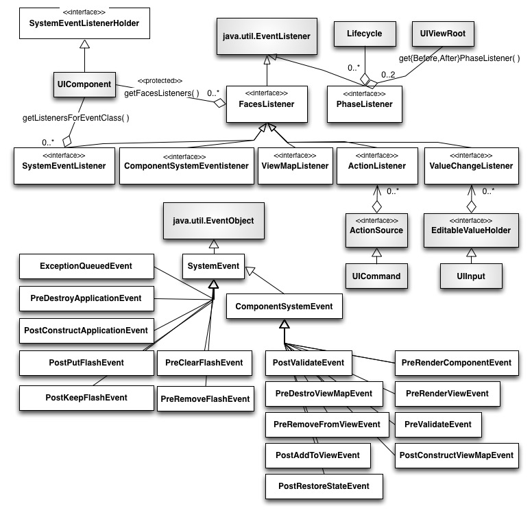

See: Description
| Interface | Description |
|---|---|
| ActionListener |
A listener interface for
receiving
ActionEvents. |
| AjaxBehaviorListener |
By implementing this class, an object
indicates that it is a listener for one or more kinds of |
| BehaviorListener |
A generic base interface for event
listeners for various types of |
| ComponentSystemEventListener |
Implementors of this class do not need
an |
| FacesListener |
A generic base interface for event listeners for various types of
FacesEvents. |
| PhaseListener |
An interface implemented by objects that wish to be notified at
the beginning and ending of processing for each standard phase of the
request processing lifecycle.
|
| SystemEventListener |
By implementing this class, an object
indicates that it is a listener for one or more kinds of |
| SystemEventListenerHolder |
Classes that implement this interface
agree to maintain a list of |
| ValueChangeListener |
A listener interface for receiving
ValueChangeEvents. |
| ViewMapListener |
Marker interface for |
| Class | Description |
|---|---|
| ActionEvent |
An |
| ActionListenerWrapper |
Provides a simple implementation of
|
| AjaxBehaviorEvent |
AjaxBehaviorEvent
represents the component behavior specific to
Ajax). |
| BehaviorEvent |
BehaviorEvent
is the event that can be generated from component
Behavior. |
| ComponentSystemEvent |
ComponentSystemEvent is
the base class for
SystemEvents that are specific to a UIComponent instance. |
| ExceptionQueuedEvent |
The system event facility will create an
instance of this class whenever |
| ExceptionQueuedEventContext |
This helper class provides context to
the |
| FacesEvent |
FacesEvent is the base class
for user interface and application events that can be fired by |
| MethodExpressionActionListener | |
| MethodExpressionValueChangeListener | |
| PhaseEvent |
PhaseEvent represents the beginning or ending of
processing for a particular phase of the request processing lifecycle,
for the request encapsulated by the specified
FacesContext. |
| PhaseId |
Typesafe enumeration of
the legal values that may be returned by the
getPhaseId() method of the FacesEvent interface. |
| PostAddToViewEvent |
When an instance of this event is
passed to |
| PostConstructApplicationEvent |
This event must be published by the runtime after all configuration resources have been parsed and processed. |
| PostConstructCustomScopeEvent |
This class is provided to allow custom scopes to publish a "post construct" event in the same way that other scopes do to let the application become aware of the beginning of the scope. |
| PostConstructViewMapEvent |
This event must be published by a call to {javax.faces.application.Application#publishEvent} when the view map is first created. |
| PostKeepFlashValueEvent |
This event must be published by a call
to |
| PostPutFlashValueEvent |
This event must be published by a call
to |
| PostRenderViewEvent |
When an instance of this event is passed to
|
| PostRestoreStateEvent |
When an instance of this event is passed
to |
| PostValidateEvent |
When an instance of
this event is passed to |
| PreClearFlashEvent |
This event must be published by a call
to |
| PreDestroyApplicationEvent |
This event must be published by the
runtime before the factories associated with this |
| PreDestroyCustomScopeEvent |
This class is provided to allow custom scopes to publish a "pre construct" event in the same way that other scopes do to let the application become aware of the beginning of the scope. |
| PreDestroyViewMapEvent |
This event must be published by a call
to |
| PreRemoveFlashValueEvent |
This event must be published by a call
to |
| PreRemoveFromViewEvent |
When an instance of this event is passed
to |
| PreRenderComponentEvent |
When an instance of this event is passed
to |
| PreRenderViewEvent |
When an instance of this event is passed
to |
| PreValidateEvent |
When an instance of
this event is passed to |
| ScopeContext |
A structure that contains the name of
the scope and the scope itself exposed as a |
| SystemEvent |
SystemEvent
is the base class for non-application specific events that can be fired by
arbitrary objects.
|
| ValueChangeEvent |
A |
| WebsocketEvent |
This web socket event will be fired when a new |
| Exception | Description |
|---|---|
| AbortProcessingException |
An exception that may be thrown by event listeners to terminate the
processing of the current event.
|
| Annotation Type | Description |
|---|---|
| ListenerFor |
Classes tagged with this annotation are
installed as listeners using the method |
| ListenersFor |
Container annotation to specify multiple
|
| NamedEvent |
The presence of this annotation on a
class automatically registers the class with the runtime as a |
| WebsocketEvent.Closed |
Indicates that a |
| WebsocketEvent.Opened |
Indicates that a |
Interfaces describing
events and event listeners, and concrete event implementation classes.
All events extend from FacesEvent and all
listeners extend from FacesListener.
For your convenience here is a UML class diagram of the classes in this package.
Copyright © 1996-2017, Oracle and/or its affiliates. All Rights Reserved. Use is subject to license terms.